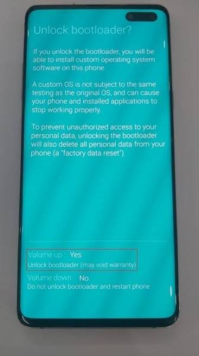
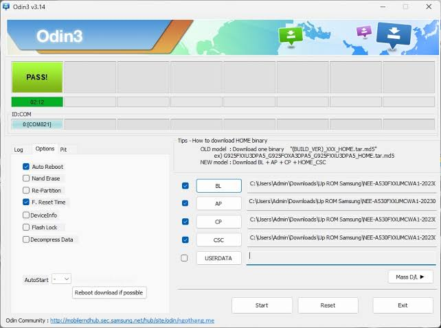

ProjectDozG Wiki
Welcome to ProjectDozG Wiki useful information or stuff you may need is here
Galaxy A12s (SM-A127F/M)
Exynos 850 · Maintainer: Dai-doz
Unlock Bootloader
1
Go to Settings → About phone → Software information and tap Build number 7 times.
2
Open Settings → Developer options and enable OEM unlocking and USB debugging.
3
Power off the phone, hold Volume Up + Volume Down, and plug in the USB cable to your PC.
4
On the warning screen, hold Volume Up until the unlock menu appears, then press Volume Up to confirm.

Flash with Odin
1
Enter Download Mode on the Galaxy A12s and open Odin on your PC.
2
Load recovery .tar into AP and Vbmeta.tar into USERDATA. Under Options, uncheck Auto Reboot.

3
Click Start, wait for PASS!, then hold Power + Volume Down and switch to Power + Volume Up as the screen turns black to boot recovery.
4
Flash repartition.zip, reboot recovery, format data, and sideload the ProjectDozG A12s ROM.
Extra Stuff — Galaxy A12s
TWRP recovery and required flashing files for Galaxy A12s.